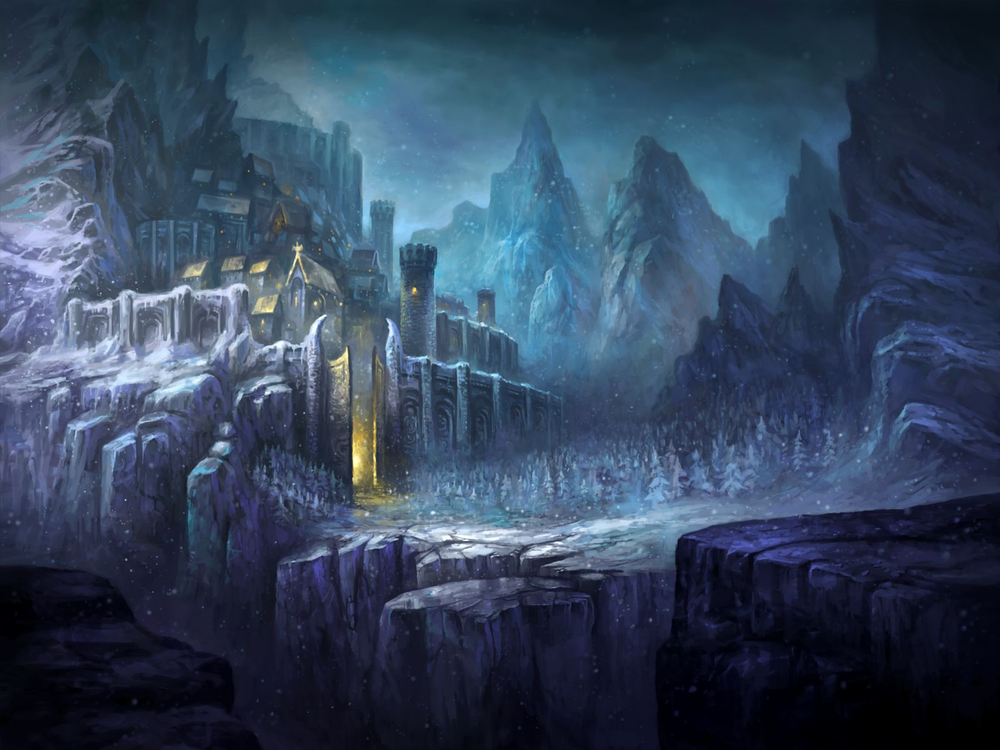
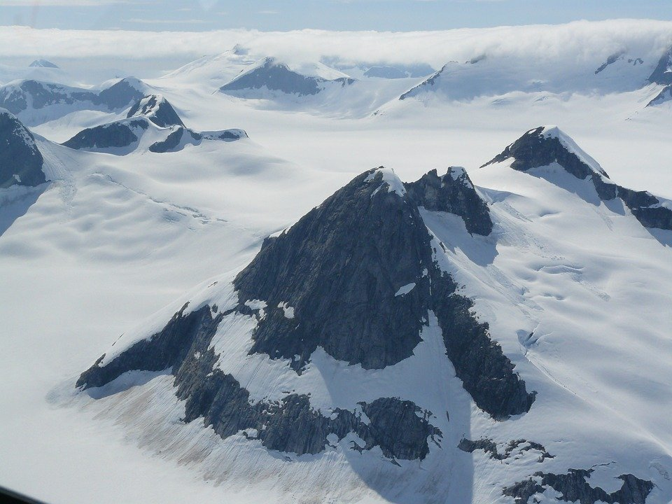
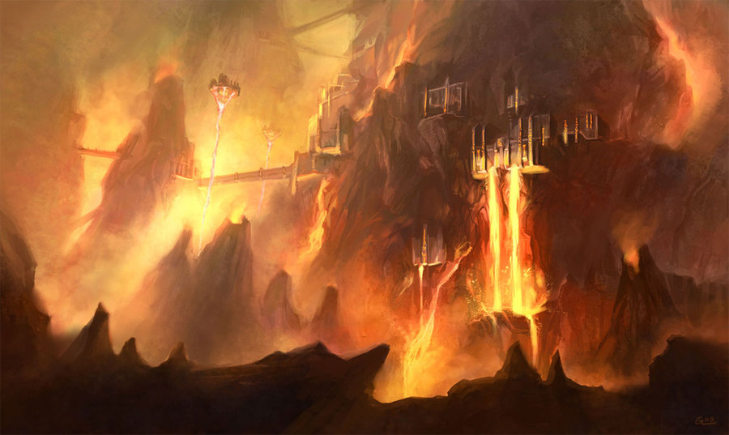
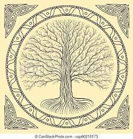
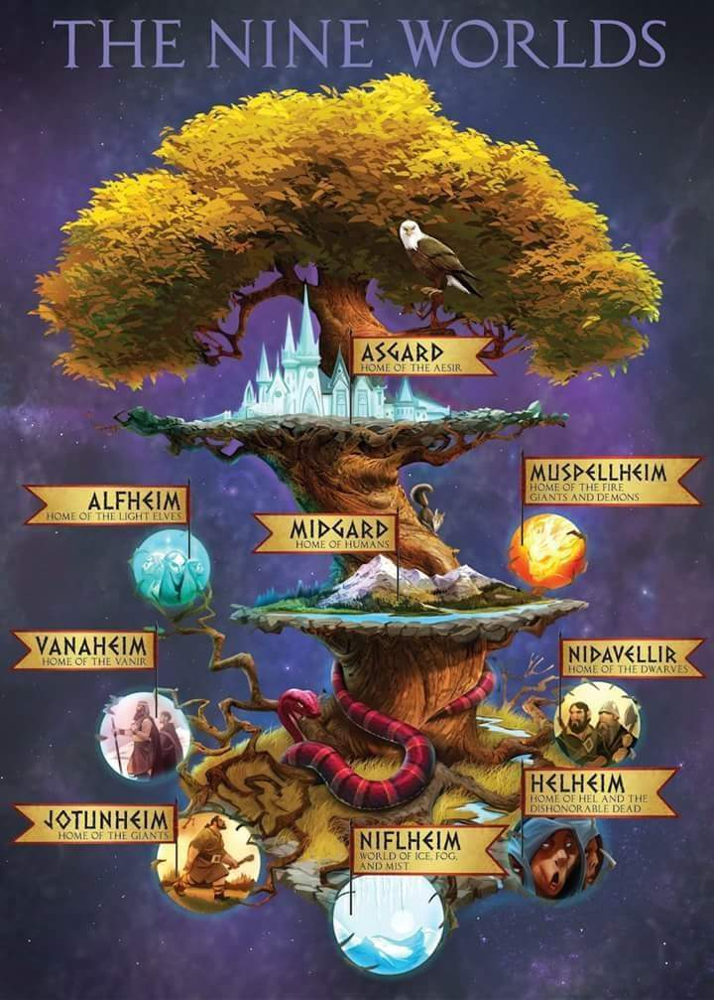

Antes não Havia nada – nem terra, nem paraíso, nem estrelas, nem céu -, existia apenas o mundo feito de nevoa (Niflheim), sem forma nem contorno. E o mundo feito de fogo (Mulpell), eternamente em chamas.
Niflheim

Localizado ao norte, onze rios venenosos cortavam a nevoa, originados do mesmo poço em seu núcleo.
Niflheim era mais frio que o próprio frio, com uma nevoa cerrada e turva que encobria tudo.
Ginnungagap

Localizado entre Niflhem e Muspell havia um vazio. Os rios do mundo feito de nevoa escoavam para esse vazio que era conhecido como Gnnungagap a “garganta do abismo” Ao longo de um tempo imensurável, os rios venenosos se solidificaram e pouco a pouco, formando enormes geleiras na região entre o fogo e a nevoa. ao norte, o vazio é preenchido da nevoa congelada e calotas de gelo mas, ao sul, mais próximo do mundo feito de fogo, as brasas e fagulhas de Muspell encontravam a geleiras, e ventos mornos da Terra Em Chamas deixavam ar acima do gelo suave e agradável como dia de primavera.
No lugar onde o gelo e o fogo se encontravam o gelo começou a derreter e nas águas derretidas a vida floresceu
Muspell

Ao sul ficava Muspell, Muspell era fogo. tudo la ardia e queimava. Muspell era brilhante, e Niflheim, cinzento; tão diferentes quanto Lava derretida e gelo. a Terra ardia como o calor ruidoso da fornalha de um ferreiro. não havia Terra sólida, não havia céu. nada além de fagulhas e jatos de calor, rochas detidas e brasas.
Yggdrasil

A Yggdrasil é uma árvore poderosa, a mais Bela e perfeita de todas as árvores. e também é mais extensa. ela cresce entre os nove mundos e os une um aos outros. é a maior árvore que existe ou já existiu, e também mais robusta. a copa se eleva acima do céu.
Yggdrasill é tão grande que fincou suas raízes em três mundos sendo nutrida por três poços.
A primeira raiz, a mais funda, se estende pelo mundo inferior até Niflheim, o lugar que existiu antes de todos os lugares. no centro daquele mundo escuro há uma fonte em eterna ebulição Hvergelmir, borbulhando com tanta intensidade que soa como uma Caldeira fervente. O Dragão Nidhogg habita essas águas e não para de mastigar a raiz sobre sua superfície.
a segunda raiz se estende pelos domínios dos gigantes do gelo até o posto de Mimir.
a última raiz da árvore do mundo se estende até uma fonte na residência dos deuses aesir, em Asgard. e ali que dia após dia os deuses se reúnem no conselho, e ali que vão se reunir nos últimos dias do mundo antes de partirem para a batalha final, o ragnarok. essa fonte se chama o posto de Urd
Os nove mundos

-Asgard, lar dos aesir onde odin estabeleceu sua morada.
-Álfheim, onde viviam os elfos de luz. criaturas tão belas quanto o Sol e as estrelas.
-Nídavellir, também conhecido como Svartalfheim, lar dos anões (ou elfos negros). vivem sob as montanhas, onde erguem criações impressionantes.
-Midgard o Reino de mulheres e homens, o mundo onde habitamos.
-Jotunheim, onde os gigantes de gelo e os gigantes das montanhas vivem circulam e constróem os seus salões.
-Vanaheim, onde vivem os vanir. tantos os Aesir quanto os Vanir são deuses. Unidos por tratados de paz, muitos dos Vanir vivem em Asgard com os Aesir.
-Niflheim, mundo escuro feito de Névoa.
-Muspell o mundo das chamas.
-Hel, para onde vão os mortos que não tiveram uma morte honrada em batalha.
Mundo
Odin vili e ve mataram o gigante ymir.
A partir da carne de ymir, Odin e seus irmãos moldaram a Terra. seus ossos foram empilhados para formar montanhas e desfiladeiros.
toda rocha e todo o seixo, toda areia e todo cascalho que hoje vemos foram criados a partir dos dentes e dos fragmentos de ossos de Ymir, quebrados e esmagados por odin vili e ve durante a batalha contra o gigante.
Os mares que rodeiam os mundos são o sangue e suor de Ymir.